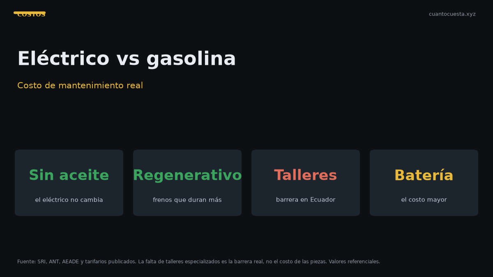

Cuánto cuesta mantener un carro eléctrico vs uno a gasolina en Ecuador
Mantener un eléctrico cuesta menos en servicios: no lleva aceite ni filtros. Pero los talleres especializados escasean. Comparación anual real en Ecuador.

El mantenimiento de un carro eléctrico es más barato que el de uno a gasolina en servicios periódicos: no lleva cambio de aceite, tiene frenos que se desgastan menos por la frenada regenerativa y su refrigeración está simplificada. En Ecuador, la diferencia real no está en la mano de obra, sino en la disponibilidad de talleres y repuestos.
Ese es el punto que casi nunca se menciona en los folletos: el eléctrico ahorra en lo predecible, pero puede costar más en lo imprevisto.
Por qué el mantenimiento del eléctrico es más simple
| Componente | Gasolina | Eléctrico |
|---|---|---|
| Cambio de aceite y filtro | Cada 5.000-15.000 km | No existe |
| Filtro de aire de motor | Sí | No |
| Bujías | Sí | No |
| Correa de distribución | Sí ($250-400) | No |
| Pastillas de freno | Desgaste normal | Desgaste mucho menor (regeneración) |
| Refrigeración | Radiador, líquido, termostato | Circuito simplificado |
| Batería de 12V | Sí | Sí |
| Neumáticos | Sí | Sí, y con más peso |
El eléctrico elimina buena parte del mantenimiento que hoy domina el tarifario: aceite, filtros, bujías y correa. Lo que queda son neumáticos, frenos (menos frecuentes), suspensión y la batería de tracción.
El ahorro del eléctrico no está en un servicio barato: está en los servicios que no existen. Ese es el punto ciego de las comparaciones que solo miran el precio de cada visita al taller y no la cantidad de visitas.
Lo que sí se mantiene en un eléctrico
- Neumáticos: desgaste igual o mayor, porque el peso y el torque instantáneo castigan las llantas.
- Frenos: se desgastan menos, pero el líquido de frenos y el sistema siguen requiriendo revisión.
- Suspensión y dirección: idénticas a las de un auto común.
- Aire acondicionado: sistema de clima con su propio mantenimiento.
- Batería de 12V: sigue existiendo y se cambia igual.
- Software y actualizaciones: según la marca, puede exigir visita al concesionario.
- Refrigeración de la batería: crítico, especializado y no se puede descuidar.
El costo de la batería a largo plazo
La batería de tracción es el gasto mayor y el más difícil de presupuestar. Su vida útil depende de la tecnología, el uso, la temperatura y sobre todo de la frecuencia de carga rápida, que acelera el desgaste.
En Ecuador no hay un precio único y los reemplazos suelen depender de importación, lo que alarga tiempos y encarece. No existe un monto estándar público: varía por modelo y proveedor.
Si compras un eléctrico, pregunta por escrito:
- Costo de reemplazo de la batería de tracción.
- Garantía: cuántos años y cuántos kilómetros cubre.
- Si hay cobertura de degradación y qué porcentaje acepta como reclamo.
- Si la garantía exige mantenimiento en talleres autorizados.
La garantía de la batería es la cláusula más importante del contrato. Confirma cuántos años cubre, qué degradación acepta como reclamo y si exige servicios en talleres autorizados — porque exigirlo puede atarte a una red que en Ecuador todavía es escasa.
La barrera real en Ecuador: talleres y diagnóstico
Aquí está el problema práctico, y es el que decide la compra:
- Falta de talleres capacitados: la mayoría de mecánicos independientes no trabaja sistemas de alta tensión.
- Repuestos que deben importarse: un componente que en un gasolina se consigue el mismo día puede tardar semanas en un eléctrico.
- Equipamiento de diagnóstico especializado: no basta el escáner OBD común; se requieren equipos y protocolos específicos.
- Riesgo técnico: manipular el sistema de alto voltaje sin formación es peligroso.
| Aspecto | Gasolina | Eléctrico |
|---|---|---|
| Talleres disponibles | Amplia red nacional | Red muy limitada, concentrada en ciudades grandes |
| Repuestos comunes | Stock local | Frecuentemente importados |
| Escáner básico | Suficiente | Insuficiente |
| Diagnóstico especializado | No requerido | Requerido |
| Tiempo de reparación | Corto | Puede ser largo por repuestos |
El equipamiento de diagnóstico es un costo indirecto que a veces asume el taller y lo traslada al cliente. En Ecuador la red de carga crece más rápido que la red de servicio técnico: hay 94 puntos de recarga (48 en Quito, 11 en Guayaquil), mientras los talleres especializados siguen concentrados en pocas ciudades.
Comparación de costo anual total (estimada)
Escenario: 12.000 km al año.
| Rubro | Gasolina (referencia) | Eléctrico (estimado) |
|---|---|---|
| Matrícula | $150-300 | Varía según avalúo, con incentivos según el caso |
| Energía / combustible | $650-700 (Extra/Ecopaís a $3,26 el galón) | Muy inferior por km |
| Mantenimiento periódico | $180-300 | Menor: sin aceite, filtros, bujías ni correa |
| Seguro | ~$400 | Similar, calculado sobre el valor del vehículo |
| Otros (llantas, frenos, imprevistos) | $100-200 | Similar, con llantas exigidas e imprevistos más caros |
| Total anual | $1.480-1.900 | Menor en lo predecible; sensible a imprevistos |
El eléctrico suele ganar en el total anual si el auto no se daña y si tienes dónde repararlo. En el momento en que necesitas un componente importado o un taller especializado, el ahorro acumulado puede evaporarse en una sola reparación.
Cómo decidir
- Verifica si hay taller autorizado en tu ciudad, no solo en Quito o Guayaquil.
- Pregunta el costo y la garantía de la batería por escrito.
- Calcula tus kilómetros reales: a más km al año, mayor ventaja del eléctrico.
- Confirma disponibilidad de repuestos de carrocería: un golpe leve puede ser una espera larga.
- Suma el seguro sobre el valor real del vehículo (regla del ~4%).
- Revisa incentivos vigentes: pueden cambiar las condiciones de la matrícula.
Resumen práctico
- El eléctrico ahorra en servicios periódicos: sin aceite, filtros, bujías ni correa.
- Los frenos regenerativos y la refrigeración simplificada reducen el mantenimiento.
- El costo de la batería es el gran imprevisto: pregunta garantía y precio por escrito.
- La barrera real en Ecuador son los talleres, los repuestos importados y el diagnóstico especializado.
- El total anual del eléctrico suele ser menor, salvo un daño mayor.
- Antes de comprar, confirma red de servicio en tu ciudad, no solo puntos de carga.
Los valores son referenciales y varían por modelo, uso y ciudad. Verifica talleres autorizados, garantías de batería y precios de repuestos antes de decidir entre un eléctrico y uno a gasolina.
Sigue leyendo
Cambio de aceite en Ecuador: cada cuántos km y cuánto cuesta (2026)
Cuánto cuesta el cambio de aceite en Ecuador, cada cuántos km hacerlo según el tipo de aceite y
Cuánto cuesta mantener un auto por marca en Ecuador: tabla comparativa 2026
Tabla del costo anual real de mantenimiento por marca en Ecuador 2026 y cuánto suma esa diferen
Cuánto cuesta un seguro todo riesgo en Ecuador y cómo bajarlo
El seguro todo riesgo cuesta cerca del 4% del valor del auto: ~$600 al año para uno de $15.000.
Depreciación: cuánto pierde valor un carro en Ecuador por año
El avalúo del SRI baja 20% al año, con piso del 10% del PVP. Cuánto pierde valor tu carro en el
Top 10: cuánto cuesta mantener cada auto al mes en Ecuador (2026)
Desglose del costo mensual real de mantener los autos más vendidos de Ecuador: matrícula, segur
Cómo usamos estos datos
Las cifras de esta guía provienen de fuentes públicas oficiales y tarifarios de concesionarios publicados. Los valores son referenciales: tasas municipales, promociones y precios de repuestos varían. Verifica siempre en la entidad o concesionario antes de decidir.